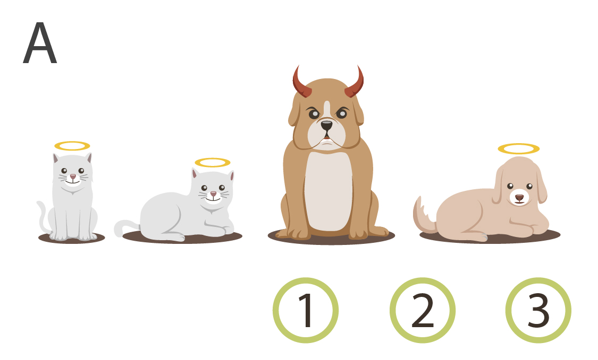
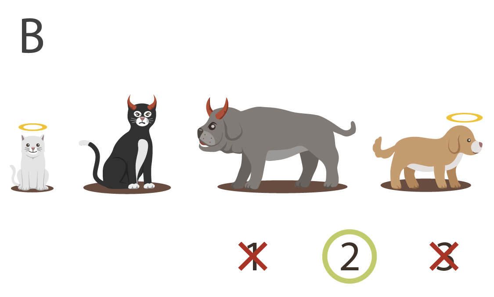
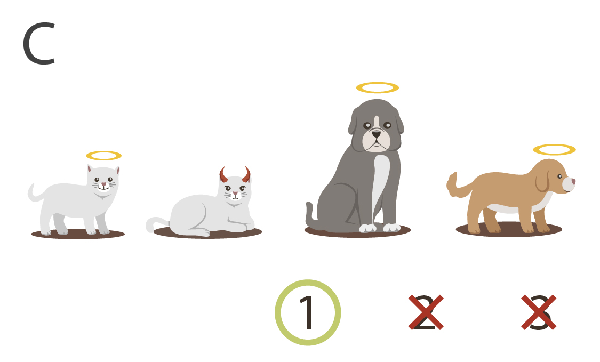
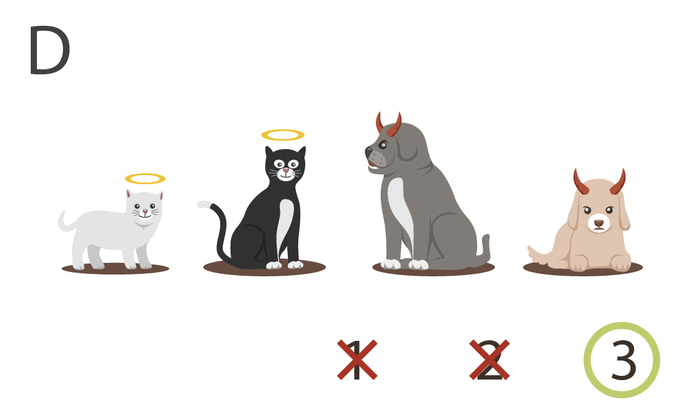
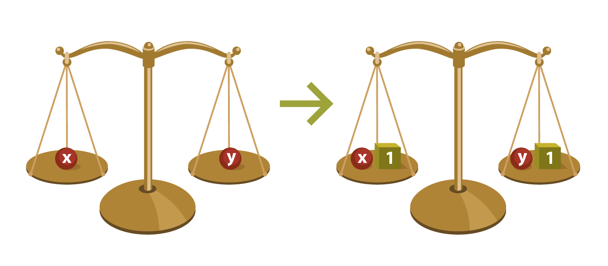
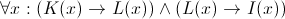
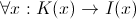
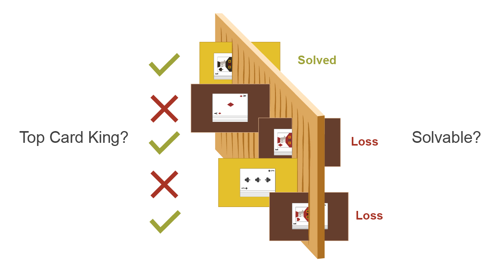
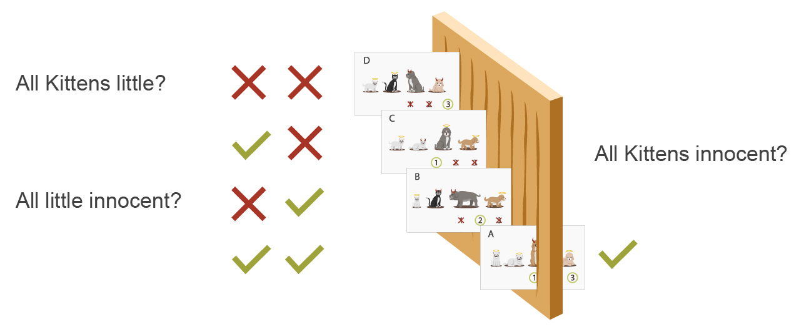

Eliezer Yudkowsky, 30 October 2012 01:02PM
Followup to: Causal Reference [http://lesswrong.com/lw/f1u/causal_reference/]
From a math professor's blog [http://mathbabe.org/2012/07/11/mathematicians-know-how-to-admit-theyre-wrong/]:
One thing I discussed with my students here at HCSSiM yesterday is the question of what is a proof.
They’re smart kids, but completely new to proofs, and they often have questions about whether what they’ve written down constitutes a proof. Here’s what I said to them.
A proof is a social construct – it is what we need it to be in order to be convinced something is true. If you write something down and you want it to count as a proof, the only real issue is whether you’re completely convincing.
This is not quite the definition I would give of what constitutes "proof" in mathematics - perhaps because I am so used to isolating arguments that are convincing, but ought not to be.
Or here again, from "An Introduction to Proof Theory [http://math.ucsd.edu/~sbuss/ResearchWeb/handbookI/ChapterI.pdf]" by Samuel R. Buss:
There are two distinct viewpoints of what a mathematical proof is. The first view is that proofs are social conventions by which mathematicians convince one another of the truth of theorems. That is to say, a proof is expressed in natural language plus possibly symbols and figures, and is sufficient to convince an expert of the correctness of a theorem. Examples of social proofs include the kinds of proofs that are presented in conversations or published in articles. Of course, it is impossible to precisely define what constitutes a valid proof in this social sense; and, the standards for valid proofs may vary with the audience and over time. The second view of proofs is more narrow in scope: in this view, a proof consists of a string of symbols which satisfy some precisely stated set of rules and which prove a theorem, which itself must also be expressed as a string of symbols. According to this view, mathematics can be regarded as a 'game' played with strings of symbols according to some precisely defined rules. Proofs of the latter kind are called "formal" proofs to distinguish them from "social" proofs.
In modern mathematics there is a much better answer that could be given to a student who asks, "What exactly is a proof?", which does not match either of the above ideas. So:
Meditation [http://wiki.lesswrong.com/wiki/Meditation]: What distinguishes a correct mathematical proof from an incorrect mathematical proof - what does it mean for a mathematical proof to be good? And why, in the real world, would anyone ever be interested in a mathematical proof of this type, or obeying whatever goodness-rule you just set down? How could you use your notion of 'proof' to improve the real-world efficacy of an Artificial Intelligence?
...
...
...
Consider the following syllogism:
Here's four mathematical universes, aka "models", in which the objects collectively obey or disobey these three rules:
|  |  |
|  |  |
There are some models where not all kittens are little, like models B and D. And there are models where not everything little is innocent, like models C and D. But there are no models where all kittens are little, and everything little is innocent, and yet there exists a guilty kitten. Try as you will, you won't be able to imagine a model like that. Any model containing a guilty kitten has at least one kitten that isn't little, or at least one little entity that isn't innocent - no way around it.
Thus, the jump from 1 & 2, to 3, is truth-preserving: in any universe where premises (1) and (2) are true to start with, the conclusion (3) is true of the same universe at the end.
Which is what makes the following implication valid, or, as people would usually just say, "true":
"If all kittens are little and everything little is innocent, then all kittens are innocent."
The advanced mainstream view of logic and mathematics (i.e., the mainstream view among professional scholars of logic as such, not necessarily among all mathematicians in general) is that when we talk about math, we are talking about which conclusions follow from which premises. The "truth" of a mathematical theorem - or to not overload the word 'true' meaning comparison-to-causal-reality [http://lesswrong.com/lw/eva/the_fabric_of_real_things/], the validity of a mathematical theorem - has nothing to do with the physical truth or falsity of the conclusion in our world, and everything to do with the inevitability of the implication. From the standpoint of validity, it doesn't matter a fig whether or not all kittens are innocent in our own universe, the connected causal fabric within which we are embedded. What matters is whether or not you can prove the implication, starting from the premises; whether or not, if all kittens were little and all little things were innocent, it would follow inevitably that all kittens were innocent.
To paraphrase Mayor Daley, logic is not there to create truth, logic is there to preserve truth. Let's illustrate this point by assuming the following equation:
x = y = 1
...which is true in at least some cases. E.g. 'x' could be the number of thumbs on my right hand, and 'y' the number of thumbs on my left hand.
Now, starting from the above, we do a little algebra:
1 | x = y = 1 | starting premise |
2 | x2 = xy | multiply both sides by x |
3 | x2 - y2 = xy - y2 | subtract y2 from both sides |
4 | (x + y)(x - y) = y(x - y) | factor |
5 | x + y = y | cancel |
6 | 2 = 1 | substitute 1 for x and 1 for y |
We have reached the conclusion that in every case where x and y are equal to 1, 2 is equal to 1. This does not seem like it should follow inevitably.
You could try to find the flaw just by staring at the lines... maybe you'd suspect that the error was between line 3 and line 4, following the heuristic of first mistrusting what looks like the most complicated step... but another way of doing it would be to try evaluating each line to see what it said concretely, for example, multiplying out x2 = xy in line 2 to get (12) = (1 * 1) or 1 = 1. Let's try doing this for each step, and then afterward mark whether each equation looks true or false:
1 | x = y = 1 | 1 = 1 | true |
2 | x2 = xy | 1 = 1 | true |
3 | x2 - y2 = xy - y2 | 0 = 0 | true |
4 | (x + y)(x - y) = y(x - y) | 0 = 0 | true |
5 | x + y = y | 2 = 1 | false |
6 | 2 = 1 | 2 = 1 | false |
Logic is there to preserve truth, not to create truth. Whenever we take a logically valid step, we can't guarantee that the premise is true to start with, but if the premise is true the conclusion should always be true. Since we went from a true equation to a false equation between step 4 and step 5, we must've done something that is in general invalid.
In particular, we divided both sides of the equation by (x - y).
Which is invalid, i.e. not universally truth-preserving, because (x - y) might be equal to 0.
And if you divide both sides by 0, you can get a false statement from a true statement. 3 * 0 = 2 * 0 is a true equation, but 3 = 2 is a false equation, so it is not allowable in general to cancel any factor if the factor might equal zero.
On the other hand, adding 1 to both sides of an equation is always truth-preserving. We can't guarantee as a matter of logic that x = y to start with - for example, x might be my number of ears and y might be my number of fingers. But if x = y then x + 1 = y + 1, always. Logic is not there to create truth; logic is there to preserve truth. If a scale starts out balanced, then adding the same weight to both sides will result in a scale that is still balanced:

I will remark, in some horror and exasperation with the modern educational system, that I do not recall any math-book of my youth ever once explaining that the reason why you are always allowed to add 1 to both sides of an equation is that it is a kind of step which always produces true equations from true equations.
What is a valid proof in algebra? It's a proof where, in each step, we do something that is universally allowed, something which can only produce true equations from true equations, and so the proof gradually transforms the starting equation into a final equation which must be true if the starting equation was true. Each step should also - this is part of what makes proofs useful in reasoning - be locally verifiable as allowed, by looking at only a small number of previous points, not the entire past history of the proof. If in some previous step I believed x2 - y = 2, I only need to look at that single step to get the conclusion x2 = 2 + y, because I am always allowed to add y to both sides of the equation; because I am always allowed to add any quantity to both sides of the equation; because if the two sides of an equation are in balance to start with, adding the same quantity to both sides of the balance will preserve that balance. I can know the inevitability of this implication without considering all the surrounding circumstances; it's a step which is locally guaranteed to be valid. (Note the similarity - and the differences - to how we can compute a causal entity knowing only its immediate parents [http://lesswrong.com/lw/ev3/causal_diagrams_and_causal_models/], and no other ancestors.)
You may have read - I've certainly read - some philosophy which endeavors to score points for counter-intuitive cynicism by saying that all mathematics is a mere game of tokens; that we start with a meaningless string of symbols like:

...and we follow some symbol-manipulation rules like "If you have the string 'A ∧ (A → B)' you are allowed to go to the string 'B'", and so finally end up with the string:

...and this activity of string-manipulation is all there is to what mathematicians call "theorem-proving" - all there is to the glorious human endeavor of mathematics.
This, like a lot of other cynicism [http://lesswrong.com/lw/ym/cynical_about_cynicism/] out there, is needlessly deflationary [http://lesswrong.com/lw/oo/explaining_vs_explaining_away/].
There's a family of techniques in machine learning known as "Monte Carlo methods [http://en.wikipedia.org/wiki/Monte_Carlo_method]" or "Monte Carlo simulation", one of which says, roughly, "To find the probability of a proposition Q given a set of premises P, simulate random models that obey P, and then count how often Q is true." Stanislaw Ulam invented the idea after trying for a while to calculate the probability that a random Canfield solitaire layout would be solvable, and finally realizing that he could get better information by trying it a hundred times and counting the number of successful plays. This was during the era when computers were first becoming available, and the thought occurred to Ulam that the same technique might work on a current neutron diffusion problem as well.
Similarly, to answer a question like, "What is the probability that a random Canfield solitaire is solvable, given that the top card in the deck is a king?" you might imagine simulating many 52-card layouts, throwing away all the layouts where the top card in the deck was not a king, using a computer algorithm to solve the remaining layouts, and counting what percentage of those were solvable. (It would be more efficient, in this case, to start by directly placing a king on top and then randomly distributing the other 51 cards; but this is not always efficient in Monte Carlo simulations when the condition to be fulfilled is more complex.)

Okay, now for a harder problem. Suppose you've wandered through the world a bit, and you've observed the following:
(1) So far I've seen 20 objects which have been kittens, and on the 6 occasions I've paid a penny to observe the size of something that's a kitten, all 6 kitten-objects have been little.
(2) So far I've seen 50 objects which have been little, and on the 30 occasions where I've paid a penny to observe the morality of something little, all 30 little objects have been innocent.
(3) This object happens to be a kitten. I want to know whether it's innocent, but I don't want to pay a cent to find out directly. (E.g., if it's an innocent kitten, I can buy it for a cent, sell it for two cents, and make a one-cent profit. But if I pay a penny to observe directly whether the kitten is innocent, I won't be able to make a profit, since gathering evidence is costly.)
Your previous experiences have led you to suspect the general rule "All kittens are little" and also the rule "All little things are innocent", even though you've never before directly checked whether a kitten is innocent.
Furthermore...
You've never heard of logic, and you have no idea how to play that 'game of symbols' with K(x), I(x), and L(x) that we were talking about earlier.
But that's all right. The problem is still solvable by Monte Carlo methods!
First we'll generate a large set of random universes. Then, for each universe, we'll check whether that universe obeys all the rules we currently suspect or believe to be true, like "All kittens are little" and "All little things are innocent" and "The force of gravity goes as the square of the distance between two objects and the product of their masses". If a universe passes this test, we'll check to see whether the inquiry of interest, "Is the kitten in front of me innocent?", also happens to be true in that universe.
We shall repeat this test a large number of times, and at the end we shall have an approximate estimate of the probability that the kitten in front of you is innocent.

On this algorithm, you perform inference by visualizing many possible universes, throwing out universes that disagree with generalizations you already believe in, and then checking what's true (probable) in the universes that remain. This algorithm doesn't tell you the state of the real physical world with certainty. Rather, it gives you a measure of probability - i.e., the probability that the kitten is innocent - given everything else you already believe to be true.
And if, instead of visualizing many imaginable universes, you checked all possible logical models - which would take something beyond magic, because that would include models containing uncountably large numbers of objects - and the inquiry-of-interest was true in every model matching your previous beliefs, you would have found that the conclusion followed inevitably if the generalizations you already believed were true.
This might take a whole lot of reasoning, but at least you wouldn't have to pay a cent to observe the kitten's innocence directly.
But it would also save you some computation if you could play that game of symbols we talked about earlier - a game which does not create truth, but preserves truth. In this game, the steps can be locally pronounced valid by a mere 'syntactic' check that doesn't require us to visualize all possible models. Instead, if the mere syntax of the proof checks out, we know that the conclusion is always true in a model whenever the premises are true in that model.
And that's a mathematical proof: A conclusion which is true in any model where the axioms are true, which we know because we went through a series of transformations-of-belief, each step being licensed by some rule which guarantees that such steps never generate a false statement from a true statement.
The way we would say it in standard mathematical logic is as follows:
A collection of axioms X semantically implies a theorem Y, if Y is true in all models where X are true. We write this as X ⊨ Y.
A collection of axioms X syntactically implies a theorem Y within a system S, if we can get to Y from X using transformation steps allowed within S. We write this as X ⊢ Y.
The point of the system S known as "classical logic" is that its syntactic transformations preserve semantic implication, so that any syntactically allowed proof is semantically valid:
If X ⊢ Y, then X ⊨ Y.
If you make this idea be about proof steps in algebra doing things that always preserve the balance of a previously balanced scale, I see no reason why this idea couldn't be presented in eighth grade or earlier.
I can attest by spot-checking for small N that even most mathematicians have not been exposed to this idea. It's the standard concept in mathematical logic, but for some odd reason, the knowledge seems constrained to the study of "mathematical logic" as a separate field, which not all mathematicians are interested in (many just want to do Diophantine analysis or whatever).
So far as real life is concerned, mathematical logic only tells us the implications of what we already believe or suspect, but this is a computational problem of supreme difficulty and importance. After the first thousand times we observe that objects in Earth gravity accelerate downward at 9.8 m/s2, we can suspect that this will be true on the next occasion - which is a matter of probabilistic induction, not valid logic. But then to go from that suspicion, plus the observation that a building is 45 meters tall, to a specific prediction of how long it takes the object to hit the ground, is a matter of logic - what will happen if everything we else we already believe, is actually true. It requires computation to make this conclusion transparent. We are not 'logically omniscient' - the technical term for the impossible dreamlike ability of knowing all the implications of everything you believe.
The great virtue of logic in argument is not that you can prove things by logic that are absolutely certain. Since logical implications are valid in every possible world, "observing" them never tells us anything about which possible world we live in. Logic can't tell you that you won't suddenly float up into the atmosphere. (What if we're in the Matrix, and the Matrix Lords decide to do that to you on a whim as soon as you finish reading this sentence?) Logic can only tell you that, if that does happen, you were wrong in your extremely strong suspicion about gravitation being always and everywhere true in our universe.
The great virtue of valid logic in argument, rather, is that logical argument exposes premises, so that anyone who disagrees with your conclusion has to (a) point out a premise they disagree with or (b) point out an invalid step in reasoning which is strongly liable to generate false statements from true statements.
For example: Nick Bostrom put forth the Simulation Argument, which is that you must disagree with either statement (1) or (2) or else agree with statement (3):
(1) Earth-originating intelligent life will, in the future, acquire vastly greater computing resources.
(2) Some of these computing resources will be used to run many simulations of ancient Earth, aka "ancestor simulations".
(3) We are almost certainly living in a computer simulation.
...but unfortunately it appears that not only do most respondents decline to say why they disbelieve in (3), most are unable to understand the distinction between the Simulation Hypothesis that we are living in a computer simulation, versus Nick Bostrom's actual support for the Simulation Argument that "You must either disagree with (1) or (2) or agree with (3)". They just treat Nick Bostrom as having claimed that we're all living in the Matrix. Really. Look at the media coverage.
I would seriously generalize that the mainstream media only understands the "and" connective, not the "or" or "implies" connective. I.e., it is impossible for the media to report on a discovery that one of two things must be true, or a discovery that if X is true then Y must be true (when it's not known that X is true). Also, the media only understands the "not" prefix when applied to atomic facts; it should go without saying that "not (A and B)" cannot be reported-on.
Robin Hanson sometimes complains that when he tries to argue that conclusion X follows from reasonable-sounding premises Y, his colleagues disagree with X while refusing to say which premise Y they think is false, or else say which step of the reasoning seems like an invalid implication. Such behavior is not only annoying, but logically rude [http://wiki.lesswrong.com/wiki/Logical_rudeness], because someone else went out of their way and put in extra effort to make it as easy as possible for you to explain why you disagreed, and you couldn't be bothered to pick one item off a multiple-choice menu.
The inspiration of logic for argument is to lay out a modular debate, one which conveniently breaks into smaller pieces that can examined with smaller conversations. At least when it comes to trying to have a real conversation with a respected partner - I wouldn't necessarily advise a teenager to try it on their oblivious parents - that is the great inspiration we can take from the study of mathematical logic: An argument is a succession of statements each allegedly following with high probability from previous statements or shared background knowledge. Rather than, say, snowing someone under with as much fury and as many demands for applause as you can fit into sixty seconds.
Michael Vassar is fond of claiming that most people don't have the concept of an argument, and that it's pointless to try and teach them anything else until you can convey an intuitive sense for what it means to argue. I think that's what he's talking about.
Meditation [http://lesswrong.com/lw/f43/proofs_implications_and_models/#7ors]: It has been claimed that logic and mathematics is the study of which conclusions follow from which premises. But when we say that 2 + 2 = 4, are we really just assuming that? It seems like 2 + 2 = 4 was true well before anyone was around to assume it, that two apples equaled two apples before there was anyone to count them, and that we couldn't make it 5 just by assuming differently.
Mainstream status. [http://lesswrong.com/lw/f43/proofs_implications_and_models/#7ort]
Part of the sequence Highly Advanced Epistemology 101 for Beginners [http://wiki.lesswrong.com/wiki/Highly_Advanced_Epistemology_101_for_Beginners]
Next post: "Logical Pinpointing [http://lesswrong.com/lw/f4e/logical_pinpointing/]"
Previous post: "Causal Reference [http://lesswrong.com/lw/f1u/causal_reference/]"
| Sequence 17: Highly Advanced Epistemology 101 for Beginners: | |
|---|---|
Previous: Causal Universes | Next: Logical Pinpointing |
Referenced by: Zombie Responses • Causal Reference • Logical Pinpointing • Mixed Reference: The Great Reductionist Project • Standard and Nonstandard Numbers
Original with comments: Proofs, Implications, and Models